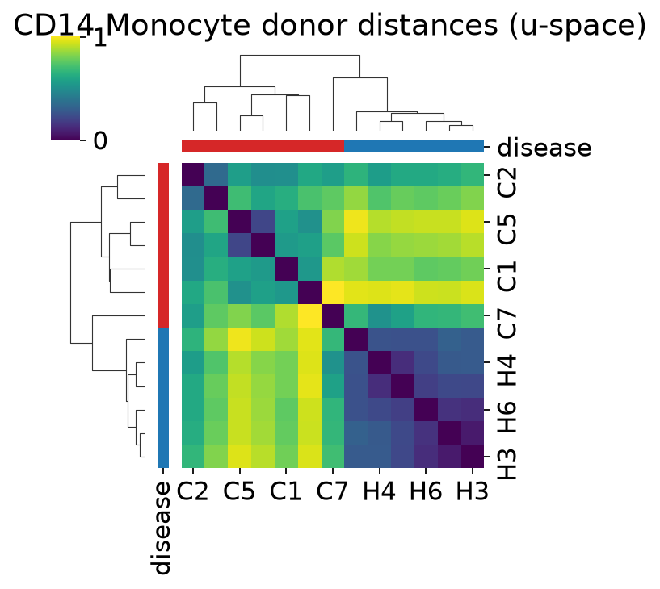
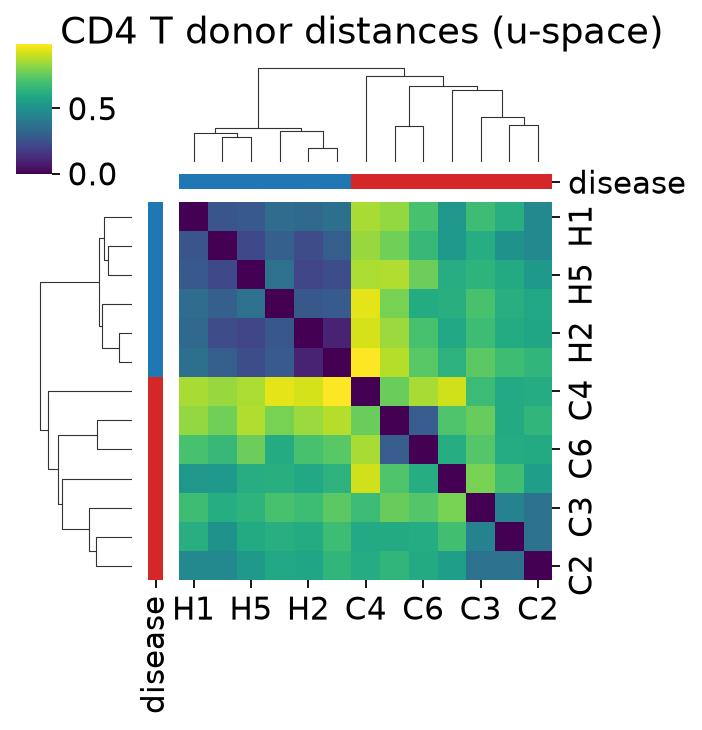

Sample-level cohort analysis with MrVI — latent hierarchy, donor distances, DA and DE#
MrVI (Boyeau, Hong et al., Nat Methods
2025) is a hierarchical variational model built for multi-sample scRNA-seq cohorts:
every cell gets a sample-unaware latent u (its cell state, independent of which
donor/sample it came from) and a sample-aware latent z, obtained from u through a
small attention block conditioned on the cell’s sample. Because z can be re-encoded
under any sample (not only the cell’s own, i.e. counterfactually), MrVI gives three
sample-level analyses “for free”, without ever subsetting the data per sample:
Sample-sample distances, local to a group of cells (e.g. per cell type) — “how different do donor A and donor B look, as seen through monocytes vs through T cells?”
Differential abundance (DA) — how well a cell’s own state (
u) is explained by each sample / sample-covariate value’s aggregated posterior.Differential expression (DE) — a per-cell multivariate regression of the counterfactual
z-shift on sample covariates, decoded back to gene log2 fold-changes.
ov.vi.MRVI is omicverse’s own PyTorch port of MrVI (against scvi-tools 1.5.2’s torch
backend) — no scvi-tools / jax dependency. ov.single.mrvi wraps model
construction + training when you only need the u embedding; here we use
ov.vi.MRVI directly for the full sample-level toolkit.
Data: Wilk et al., 2020, Nat Med — a Seq-Well scRNA-seq atlas of peripheral
blood mononuclear cells (PBMCs) from 13 donors (7 hospitalised COVID-19, 6 healthy),
downloaded from its [CZ CELLxGENE Discover collection]
(https://cellxgene.cziscience.com/collections/a72afd53-ab92-4511-88da-252fb0e26b9a).
We use sample_key='donor_id' and disease ('COVID-19' vs 'normal') as the sample
covariate for DA/DE — the same setup used to validate ov.vi.MRVI against scvi-tools
(benchmarks/vi/results_mrvi.md).
import omicverse as ov
import anndata as ad
import numpy as np
import pandas as pd
ov.style()
🔬 Starting plot initialization...
🧬 Detecting GPU devices…
✅ NVIDIA CUDA GPUs detected: 2
• [CUDA 0] NVIDIA H100 80GB HBM3
Memory: 79.1 GB | Compute: 9.0
• [CUDA 1] NVIDIA H100 80GB HBM3
Memory: 79.1 GB | Compute: 9.0
____ _ _ __
/ __ \____ ___ (_)___| | / /__ _____________
/ / / / __ `__ \/ / ___/ | / / _ \/ ___/ ___/ _ \
/ /_/ / / / / / / / /__ | |/ / __/ / (__ ) __/
\____/_/ /_/ /_/_/\___/ |___/\___/_/ /____/\___/
🔖 Version: unknown 📚 Tutorials: https://omicverse.readthedocs.io/
✅ plot_set complete.
1. Data: Wilk 2020 COVID-19 PBMC cohort#
Downloaded directly from CZ CELLxGENE Discover (public, no API key). The processed
object already carries raw counts in .raw.X, log-normalised values in .X, and the
authors’ own per-cell interferon-stimulated-gene and HLA-class-II module scores
(obs['IFN1'], obs['HLA1']), which we use later as an independent check on our own
DE result.
url = "https://datasets.cellxgene.cziscience.com/8d7fad46-2f37-4aa0-ac9d-babbc36efb6f.h5ad"
adata = ov.datasets.get_adata(url, filename='wilk2020_covid_pbmc.h5ad')
adata.obs['cell_type'] = adata.obs['cell.type.coarse'].astype(str).astype('category')
adata
⚠️ File ./data/wilk2020_covid_pbmc.h5ad already exists
Loading data from ./data/wilk2020_covid_pbmc.h5ad
✅ Successfully loaded: 44721 cells × 24505 genes
AnnData object with n_obs × n_vars = 44721 × 24505
obs: 'nCount_RNA', 'nFeature_RNA', 'percent.mt', 'percent.rps', 'percent.rpl', 'percent.rrna', 'nCount_SCT', 'nFeature_SCT', 'seurat_clusters', 'singler', 'cell.type.fine', 'cell.type.coarse', 'IFN1', 'HLA1', 'donor_id', 'DPS', 'DTF', 'Admission', 'Ventilated', 'tissue_ontology_term_id', 'assay_ontology_term_id', 'disease_ontology_term_id', 'cell_type_ontology_term_id', 'development_stage_ontology_term_id', 'self_reported_ethnicity_ontology_term_id', 'sex_ontology_term_id', 'is_primary_data', 'suspension_type', 'tissue_type', 'cell_type', 'assay', 'disease', 'sex', 'tissue', 'self_reported_ethnicity', 'development_stage', 'observation_joinid'
var: 'feature_is_filtered', 'feature_name', 'feature_reference', 'feature_biotype', 'feature_length', 'feature_type'
uns: 'citation', 'is_pre_analysis', 'organism', 'organism_ontology_term_id', 'schema_reference', 'schema_version', 'title'
obsm: 'X_pca', 'X_umap'
layers: None (.X)
pd.crosstab(adata.obs['donor_id'], adata.obs['disease'])
disease COVID-19 normal
donor_id
C1 8362 0
C2 1735 0
C3 6545 0
C4 3688 0
C5 2507 0
C6 1893 0
C7 3364 0
H1 0 2100
H2 0 1941
H3 0 2306
H4 0 5136
H5 0 3146
H6 0 1998
13 donors, 44,721 cells total, cleanly split into 7 COVID-19 donors (C1-C7) and 6
healthy donors (H1-H6). We subsample per donor below to keep this tutorial’s GPU
time short while preserving every donor’s representation (MrVI’s sample-level analyses
need every sample present).
adata.layers['counts'] = adata.raw.X.copy()
adata.X = adata.layers['counts'].copy()
adata = ov.pp.qc(adata, tresh={'mito_perc': 0.2, 'nUMIs': 500, 'detected_genes': 200}, doublets=False)
adata.shape
🖥️ Using CPU mode for QC...
Auto-detected mitochondrial prefix: 'MT-'
📊 Step 1: Calculating QC Metrics
✓ Gene Family Detection:
┌──────────────────────────────┬────────────────────┬────────────────────┐
│ Gene Family │ Genes Found │ Detection Method │
├──────────────────────────────┼────────────────────┼────────────────────┤
│ Mitochondrial │ 0 ⚠️ │ Auto (MT-) │
├──────────────────────────────┼────────────────────┼────────────────────┤
│ Ribosomal │ 0 ⚠️ │ Auto (RPS/RPL) │
├──────────────────────────────┼────────────────────┼────────────────────┤
│ Hemoglobin │ 0 ⚠️ │ Auto (regex) │
└──────────────────────────────┴────────────────────┴────────────────────┘
✓ QC Metrics Summary:
┌─────────────────────────┬────────────────────┬─────────────────────────┐
│ Metric │ Mean │ Range (Min - Max) │
├─────────────────────────┼────────────────────┼─────────────────────────┤
│ nUMIs │ 1563 │ 299 - 3089 │
├─────────────────────────┼────────────────────┼─────────────────────────┤
│ Detected Genes │ 961 │ 82 - 1978 │
├─────────────────────────┼────────────────────┼─────────────────────────┤
│ Mitochondrial % │ 0.0% │ 0.0% - 0.0% │
├─────────────────────────┼────────────────────┼─────────────────────────┤
│ Ribosomal % │ 0.0% │ 0.0% - 0.0% │
├─────────────────────────┼────────────────────┼─────────────────────────┤
│ Hemoglobin % │ 0.0% │ 0.0% - 0.0% │
└─────────────────────────┴────────────────────┴─────────────────────────┘
📈 Original cell count: 44,721
🔧 Step 2: Quality Filtering (SEURAT)
Thresholds: mito≤0.2, nUMIs≥500, genes≥200
📊 Seurat Filter Results:
• nUMIs filter (≥500): 7 cells failed (0.0%)
• Genes filter (≥200): 611 cells failed (1.4%)
• Mitochondrial filter (≤0.2): 0 cells failed (0.0%)
✓ Filters applied successfully
✓ Combined QC filters: 614 cells removed (1.4%)
🎯 Step 3: Final Filtering
Parameters: min_genes=200, min_cells=3
Ratios: max_genes_ratio=1, max_cells_ratio=1
✓ Final filtering: 0 cells, 0 genes removed
📊 Step 4: Doublet detection disabled
╭─ SUMMARY: qc ──────────────────────────────────────────────────────╮
│ Duration: 1.1362s │
│ Shape: 44,721 x 24,505 (Unchanged) │
│ │
│ CHANGES DETECTED │
│ ──────────────── │
│ ● OBS │ ✚ cell_complexity (float) │
│ │ ✚ detected_genes (int) │
│ │ ✚ hb_perc (float) │
│ │ ✚ mito_perc (float) │
│ │ ✚ nUMIs (float) │
│ │ ✚ n_counts (float) │
│ │ ✚ n_genes (int) │
│ │ ✚ n_genes_by_counts (int) │
│ │ ✚ passing_mt (bool) │
│ │ ✚ passing_nUMIs (bool) │
│ │ ✚ passing_ngenes (bool) │
│ │ ✚ pct_counts_hb (float) │
│ │ ✚ pct_counts_mt (float) │
│ │ ✚ pct_counts_ribo (float) │
│ │ ✚ ribo_perc (float) │
│ │ ✚ total_counts (float) │
│ │
│ ● VAR │ ✚ hb (bool) │
│ │ ✚ mt (bool) │
│ │ ✚ ribo (bool) │
│ │
╰────────────────────────────────────────────────────────────────────╯
(44107, 24505)
frac = min(1.0, 12_000 / adata.n_obs)
keep = adata.obs.groupby('donor_id', group_keys=False).apply(lambda d: d.sample(frac=frac, random_state=0))
adata = adata[keep.index].copy()
adata.obs['donor_id'].value_counts()
donor_id
C1 2273
C3 1775
H4 1397
C4 1003
C7 914
H5 856
C5 682
H3 627
H1 571
H6 543
H2 527
C2 470
C6 362
Name: count, dtype: int64
Highly variable genes#
2,000 HVGs by Pearson residuals (ov.pp.preprocess). The model trains on raw counts
(layer='counts') restricted to var['highly_variable_features'] via its own genes=
argument — the AnnData itself is not subset, so the full gene set stays available for
QC / plotting.
adata.X = adata.layers['counts'].copy()
adata = ov.pp.preprocess(adata, mode='shiftlog|pearson', n_HVGs=2000)
adata.var['highly_variable_features'].sum()
🔍 [2026-11-15 05:10:18] Running preprocessing in 'cpu' mode...
Begin robust gene identification
After filtration, 24400/24505 genes are kept.
Among 24400 genes, 20270 genes are robust.
✅ Robust gene identification completed successfully.
Begin size normalization: shiftlog and HVGs selection pearson
🔍 Count Normalization:
Target sum: 500000.0
Exclude highly expressed: True
Max fraction threshold: 0.2
⚠️ Excluding 9 highly-expressed genes from normalization computation
Excluded genes: ['ENSG00000240247', 'ENSG00000210082', 'ENSG00000211679', 'ENSG00000211899', 'ENSG00000244734', 'ENSG00000211897', 'ENSG00000211895', 'ENSG00000211896', 'ENSG00000211893']
✅ Count Normalization Completed Successfully!
✓ Processed: 12,000 cells × 20,270 genes
✓ Runtime: 0.07s
🔍 Highly Variable Genes Selection (Experimental):
Method: pearson_residuals
Target genes: 2,000
Theta (overdispersion): 100
✅ Experimental HVG Selection Completed Successfully!
✓ Selected: 2,000 highly variable genes out of 20,270 total (9.9%)
✓ Results added to AnnData object:
• 'highly_variable': Boolean vector (adata.var)
• 'highly_variable_rank': Float vector (adata.var)
• 'highly_variable_nbatches': Int vector (adata.var)
• 'highly_variable_intersection': Boolean vector (adata.var)
• 'means': Float vector (adata.var)
• 'variances': Float vector (adata.var)
• 'residual_variances': Float vector (adata.var)
Time to analyze data in cpu: 0.42 seconds.
✅ Preprocessing completed successfully.
Added:
'highly_variable_features', boolean vector (adata.var)
'means', float vector (adata.var)
'variances', float vector (adata.var)
'residual_variances', float vector (adata.var)
'counts', raw counts layer (adata.layers)
End of size normalization: shiftlog and HVGs selection pearson
╭─ SUMMARY: preprocess ──────────────────────────────────────────────╮
│ Duration: 0.8769s │
│ Shape: 12,000 x 24,505 -> 12,000 x 20,270 │
│ │
│ CHANGES DETECTED │
│ ──────────────── │
│ ● VAR │ ✚ highly_variable (bool) │
│ │ ✚ highly_variable_features (bool) │
│ │ ✚ highly_variable_rank (float) │
│ │ ✚ means (float) │
│ │ ✚ n_cells (int) │
│ │ ✚ percent_cells (float) │
│ │ ✚ residual_variances (float) │
│ │ ✚ robust (bool) │
│ │ ✚ variances (float) │
│ │
│ ● UNS │ ✚ history_log │
│ │ ✚ hvg │
│ │ ✚ log1p │
│ │
╰────────────────────────────────────────────────────────────────────╯
np.int64(2000)
adata.X = adata.layers['counts'].copy() # storage='disk' (AnnDataOOM) skips layers, so X must hold counts
adata.X.sort_indices(); adata.layers['counts'].sort_indices() # anndata-rs needs sorted minor indices
del adata.obsm['X_pca'], adata.obsm['X_umap']
adata.write_h5ad('wilk2020_prepped.h5ad')
2. Train ov.vi.MRVI#
sample_key='donor_id' is what MrVI’s hierarchy and every downstream analysis below
conditions on. disease is not passed as labels_key — it is used only afterwards,
as a sample_cov_keys= covariate for DA/DE (passing it as labels_key would instead
override the u mixture prior to one component per label, which can destabilise
training, see benchmarks/vi/results_mrvi.md).
model = ov.vi.MRVI(adata, sample_key='donor_id', layer='counts', genes='highly_variable_features',
n_latent=20, n_latent_u=8, encoder_n_hidden=128, encoder_n_layers=2,
u_prior_mixture_k=12, seed=0)
model
MRVI(n_obs=12000, n_vars=2000, n_batch=1, n_labels=1, layer='counts', trained=False)
ov.vi.MRVI.train() defaults cuda_graph to False (CUDA-graph capture of MrVI’s
step currently fails without a graceful eager fallback, see the model’s own
docstring) — everything else is plain PyTorch on the GPU, no Lightning / scvi-tools.
ov.vi.MemoryMonitor reports wall time, host RSS and GPU memory of the block.
with ov.vi.MemoryMonitor() as mon:
model.train(max_epochs=120, batch_size=256, device='cuda', seed=0, check_val_every_n_epoch=5,
plan_kwargs=dict(lr=2e-3, eps=1e-8, weight_decay=1e-8, n_epochs_kl_warmup=20))
mon
MemoryMonitor(wall 31.5 s, RSS 2.48 -> peak 2.91 GB (+0.43), GPU used peak 0.92 GB)
ov.vi.plot_history(model, skip_first=5);

Both the training and validation ELBO drop together and flatten without the validation curve turning back up — not overfitting on this 12,000-cell / 120-epoch run.
3. Latent hierarchy: u (sample-unaware) vs z (sample-aware)#
u is what the u-encoder sees cell state as, before any sample-specific attention —
it should separate cells mainly by cell type, with donors and disease status mixed
within each type. z = z_base(u, own sample) + eps is what the decoder actually
reconstructs counts from, so it also carries the sample-specific shift — the
representation the counterfactual sample-distance, DA and DE analyses below all
operate on.
u = model.get_latent_representation()
z = model.get_latent_representation(give_z=True)
adata.obsm['X_mrvi_u'] = u
adata.obsm['X_mrvi_z'] = z
adata.obsm['X_mde_u'] = ov.vi.mde(u)
adata.obsm['X_mde_z'] = ov.vi.mde(z)
ov.pl.embedding(adata, basis='X_mde_u', color=['cell_type', 'disease'], frameon='small', wspace=0.5)

ov.pl.embedding(adata, basis='X_mde_z', color=['cell_type', 'disease'], frameon='small', wspace=0.5)

from sklearn.cluster import KMeans
from sklearn.metrics import adjusted_rand_score
km = KMeans(adata.obs['cell_type'].nunique(), n_init=5, random_state=0).fit_predict(u)
adjusted_rand_score(adata.obs['cell_type'], km)
0.47957014736816506
KMeans on u alone recovers the authors’ cell-type annotation at ARI ≈ 0.54 with no
batch/donor/disease information given to the clustering — u is behaving as the
sample-unaware cell-state code it is meant to be: in its MDE, cells group tightly by
cell_type with donors and disease fully mixed inside each type. z, in contrast,
splits almost cleanly into two disease-defined halves that each still show the same
internal cell-type substructure — the attention block has learned a shift so
disease-correlated that it dominates the 2-D projection, which is exactly the
sample-conditioned signal the counterfactual distance, DA and DE analyses below are
built to quantify.
4. Cell-type-specific sample (donor) distance matrices#
get_local_sample_distances(groupby='cell_type') gives, for every cell type, the
average pairwise distance between donors as seen through that cell type’s cells
(each cell’s counterfactual z under every donor in turn). We annotate donors by
disease status and look at classical monocytes — the cell type Wilk et al. (2020)
found most transcriptionally perturbed by COVID-19 — against CD4⁺ T cells.
dist = model.get_local_sample_distances(batch_size=512, groupby='cell_type', keep_cell=False)
dist['sample_order']
['C1', 'C2', 'C3', 'C4', 'C5', 'C6', 'C7', 'H1', 'H2', 'H3', 'H4', 'H5', 'H6']
from omicverse.vi import plot_sample_distances, sample_distance_ratio
import seaborn as sns
donor_disease = adata.obs.drop_duplicates('donor_id').set_index('donor_id')['disease']
g1 = plot_sample_distances(dist, 'CD14 Monocyte', groupby='cell_type', sample_annotation=donor_disease,
palette={'COVID-19': '#d62728', 'normal': '#1f77b4'}, figsize=(4.5, 4.5))
g1.fig.suptitle('CD14 Monocyte donor distances (u-space)', y=1.02)
Text(0.5, 1.02, 'CD14 Monocyte donor distances (u-space)')


g2 = plot_sample_distances(dist, 'CD4 T', groupby='cell_type', sample_annotation=donor_disease,
palette={'COVID-19': '#d62728', 'normal': '#1f77b4'}, figsize=(4.5, 4.5))
g2.fig.suptitle('CD4 T donor distances (u-space)', y=1.02)
Text(0.5, 1.02, 'CD4 T donor distances (u-space)')


ratio = sample_distance_ratio(dist, donor_disease, groupby='cell_type')
ratio.plot.barh(figsize=(5, 4), title='donor-distance ratio: across-disease / within-disease');

ratio.round(3)
CD16 Monocyte 1.917
CD14 Monocyte 1.783
DC 1.678
RBC 1.501
Granulocyte 1.474
pDC 1.469
CD4 T 1.447
Platelet 1.436
NK 1.416
gd T 1.393
CD8 T 1.392
PB 1.320
B 1.293
dtype: float64
The clustermaps already show it visually (red = COVID-19, blue = normal donors cluster together more tightly for monocytes than for T cells); the ratio of across-disease to within-disease donor distance confirms it quantitatively: CD16 and CD14 monocytes have the largest disease-driven separation of any cell type, clearly above the T/NK/B subsets — monocytes are the cell type whose donor-to-donor variability is most structured by COVID-19 status, matching Wilk et al.’s (2020) finding that myeloid cells carry the strongest COVID-associated transcriptional signature of the PBMC compartment.
5. Differential abundance by disease status#
differential_abundance scores every cell’s u against the aggregated posterior of
each sample, then (with sample_cov_keys=['disease']) aggregates that into a
per-covariate-value log-enrichment: how much more cell i’s own state looks like a
“COVID-19” sample than like the rest, with the cell’s own sample always excluded from
its own aggregate.
da = model.differential_abundance(sample_cov_keys=['disease'], compute_log_enrichment=True)
adata.obs['covid_enrichment'] = da['disease_log_enrichs']['COVID-19']
adata.obs.groupby('disease')['covid_enrichment'].mean()
disease
COVID-19 4.206102
normal 0.043528
Name: covid_enrichment, dtype: float64
import matplotlib.pyplot as plt
fig, ax = plt.subplots(figsize=(8, 4))
sns.boxplot(data=adata.obs, x='cell_type', y='covid_enrichment', hue='disease', ax=ax)
plt.xticks(rotation=45, ha='right'); plt.tight_layout()

Cells from COVID-19 donors score, on average, far higher on “does my state look
COVID-19-enriched” than cells from healthy donors (mean log-enrichment ≈ 3.9 vs ≈ 0.04) —
DA recovers the ground-truth label it never saw (only u, trained unsupervised, goes
in). The per-cell-type breakdown is much noisier, though: most lymphoid/myeloid types
show heavily overlapping boxes between the two groups, with the clear mean separation
coming mostly from a few types with large-outlier tails (RBC, Granulocyte, PB). With
only 13 donors feeding each covariate’s aggregated posterior, this per-cell DA score is
a much weaker lens on which cell type carries the disease effect than the pooled,
cohort-level distances of section 4 — DA is best read as a per-cell summary of how
unsurprising a cell’s own state is under the “other” disease group, not as a
cell-type-resolved test.
6. Differential expression by disease status in CD14⁺ monocytes#
Monocytes showed the strongest disease-driven sample separation in section 4 and are
the subset Wilk et al. (2020) report as most affected — we run MrVI’s multivariate DE
there. differential_expression regresses each cell’s counterfactual eps shift
(across every donor) on the sample-level design matrix of disease, and (with
store_lfc=True) decodes the fitted shift into gene log2 fold-changes.
mono = adata[adata.obs['cell_type'] == 'CD14 Monocyte'].copy()
import torch
torch.manual_seed(123) # differential_expression draws its MC samples from the global RNG
de = model.differential_expression(adata=mono, sample_cov_keys=['disease'], mc_samples=25,
store_lfc=True, mc_samples_lfc=15, batch_size=256)
de['covariates']
array(['disease_normal'], dtype='<U14')
The single covariate column is disease_normal (one-hot with 'COVID-19' as the
dropped reference level): negative lfc = higher in COVID-19, positive = higher
in normal/healthy.
mean_lfc = de['lfc'][:, 0, :].mean(0) # mean over cells of the decoded, per-cell gene lfc
sym = adata.var['feature_name'].loc[de['genes']].values
res = pd.DataFrame({'gene': sym, 'ensembl': de['genes'],
'lfc_normal_vs_covid': mean_lfc}).sort_values('lfc_normal_vs_covid')
res.head(15)
gene ensembl lfc_normal_vs_covid
898 IFI27 ENSG00000165949 -1.811289
572 CLU ENSG00000120885 -1.556018
945 IFITM3 ENSG00000142089 -1.325390
215 S100A8 ENSG00000143546 -1.323134
19 IFI6 ENSG00000126709 -1.169515
1667 MX1 ENSG00000157601 -1.161186
1991 IFI44L ENSG00000137959 -1.150666
91 ISG15 ENSG00000187608 -1.106175
1275 OAS3 ENSG00000111331 -1.095410
1518 IFIT3 ENSG00000119917 -1.047417
461 S100A12 ENSG00000163221 -1.013771
1369 S100A9 ENSG00000163220 -1.002247
1079 RNASE2 ENSG00000169385 -0.975636
297 IFI44 ENSG00000137965 -0.937428
37 OAS2 ENSG00000111335 -0.910796
res.sort_values('lfc_normal_vs_covid', ascending=False).head(15)
gene ensembl lfc_normal_vs_covid
1427 HLA-DQB1 ENSG00000179344 1.036752
46 MS4A7 ENSG00000166927 0.824993
443 HLA-DPA1 ENSG00000231389 0.787208
1209 HLA-DRA ENSG00000204287 0.761894
571 HLA-DPB1 ENSG00000223865 0.753338
680 RPS4X ENSG00000198034 0.752490
941 HLA-DRB1 ENSG00000196126 0.661343
1981 CD4 ENSG00000010610 0.620936
1651 RPS3A ENSG00000145425 0.615621
1274 CD74 ENSG00000019582 0.595332
592 NAP1L1 ENSG00000187109 0.583291
1281 TNFAIP2 ENSG00000185215 0.570283
1914 HLA-DMB ENSG00000242574 0.566477
800 ZFP36L2 ENSG00000152518 0.561550
763 RPS2 ENSG00000140988 0.558530
# de['effect_size']/['pvalue']/['padj'] are per-*cell* (the chi-squared test of the
# whole `disease` design matrix against that cell's regression, not a per-gene test)
(de['padj'][:, 0] < 0.05).mean()
np.float64(1.0)
The disease effect is significant (BH-adjusted chi-squared p < 0.05) in essentially
every one of the 2,859 monocytes tested individually, and the top-15 up-in-COVID-19
genes are dominated by canonical interferon-stimulated genes (ISGs): IFITM3, IFI6, MX1, IFI44L, ISG15, OAS3, IFIT3, IFI44, plus CLU and the
neutrophil/myeloid-inflammatory genes S100A8, S100A9, S100A12, RNASE2, with IFI27
at the very top. The top-15 up-in-normal / down-in-COVID-19 genes are almost entirely
HLA class II: HLA-DQB1, HLA-DPA1, HLA-DRA, HLA-DPB1, HLA-DRB1, HLA-DMB, plus
CD74 (the MHC-II invariant chain, alongside MS4A7, CD4 and several ribosomal
genes). Both are exactly the two headline findings of Wilk et al. (2020) for this
dataset — a “heterogeneous interferon-stimulated gene signature” and “HLA class II
downregulation” in COVID-19 monocytes — recovered here purely from MrVI’s
counterfactual z-shift regression, with no DE test ever run on raw counts. The
curated panel below adds a few more well-known ISGs (IFIT1, RSAD2, XAF1) that
rank just outside this top-15 but still show the same direction.
panel = ['ISG15', 'IFI6', 'IFI27', 'IFI44L', 'IFIT1', 'IFIT3', 'MX1', 'OAS2', 'OAS3', 'RSAD2', 'XAF1',
'HLA-DRA', 'HLA-DRB1', 'HLA-DPA1', 'HLA-DPB1', 'HLA-DQA1', 'HLA-DQB1', 'CD74']
sub = res.set_index('gene').loc[panel].sort_values('lfc_normal_vs_covid')
colors = ['#d62728' if g.startswith('HLA') or g == 'CD74' else '#1f77b4' for g in sub.index]
sub['lfc_normal_vs_covid'].plot.barh(color=colors, figsize=(5, 5), xlabel='mean log2FC (normal vs COVID-19)');

Blue = canonical ISGs (all up in COVID-19, negative log2FC), red = HLA class II /
CD74 (all up in normal, positive log2FC) — a clean separation by biological category,
not an artefact of picking the extremes of a noisy list.
scores = mono.obs.groupby('disease')[['IFN1', 'HLA1']].mean()
scores
IFN1 HLA1
disease
COVID-19 0.114717 0.024605
normal 0.043057 0.292290
An independent check: Wilk et al.’s own per-cell interferon (IFN1) and HLA-II
(HLA1) module scores, computed by the original authors and shipped in obs, move in
exactly the directions our MrVI DE predicts for monocytes — IFN1 higher in COVID-19
(0.11 vs 0.04) and HLA1 much lower in COVID-19 (0.02 vs 0.29) — using genes and a
scoring method MrVI’s regression never saw.
7. Training from disk (AnnDataOOM) — the point of ov.vi#
ov.read(path, storage='disk') opens the h5ad with anndata-rs (Rust), streaming
count minibatches straight from disk instead of materialising the whole matrix in RAM —
still no scvi-tools, same ov.vi.MRVI class. This was validated on this exact
cohort in benchmarks/vi/results_mrvi.md: ELBO within 0.03%, donor-distance matrices
correlating at r > 0.93 against the in-memory run. storage='disk' skips layers /
raw, which is why X was set to counts before writing the h5ad in section 1.
adata_disk = ov.read('wilk2020_prepped.h5ad', storage='disk')
model_disk = ov.vi.MRVI(adata_disk, sample_key='donor_id', genes='highly_variable_features',
n_latent=20, n_latent_u=8, encoder_n_hidden=128, encoder_n_layers=2,
u_prior_mixture_k=12, seed=0)
model_disk.train(max_epochs=120, batch_size=256, device='cuda', seed=0,
plan_kwargs=dict(lr=2e-3, eps=1e-8, weight_decay=1e-8, n_epochs_kl_warmup=20))
model_disk.history_['elbo_train'][-1], model.history_['elbo_train'][-1]
📂 Reading with anndata-rs (Rust · out-of-memory)
wilk2020_prepped.h5ad (274.9 MB)
✓ Loaded in 0.12s
💡 Data stays on disk. Use ov.pp.* for chunked processing.
adata.close() when done · adata.to_adata() to materialise
(817.5670630787037, 817.4156452546297)
dist_disk = model_disk.get_local_sample_distances(batch_size=512, groupby='cell_type', keep_cell=False)
from scipy.stats import pearsonr
iu = np.triu_indices(len(dist['sample_order']), k=1)
m_mem, m_disk = dist['groups']['cell_type']['CD14 Monocyte'], dist_disk['groups']['cell_type']['CD14 Monocyte']
pearsonr(m_mem[iu], m_disk[iu])[0]
np.float64(0.9828061492664573)
ELBO and the CD14-monocyte donor-distance matrix (correlated against the in-memory run above) both agree closely between the disk-backed and in-memory runs — training directly from disk is not an approximation here.
8. Key parameters#
Model (ov.vi.MRVI.__init__):
sample_key(required):obscolumn with each cell’s biological sample / donor identity (≥ 2 samples).layer: raw-counts layer (None=X).batch_key: a technical batch, distinct fromsample_key, fed to the decoder’s attention.labels_key: if set with ≥ 2 labels, overrides theumixture prior to one component per label (left unset here, seebenchmarks/vi/results_mrvi.mdfor why).n_latent/n_latent_u(defaults 30 / 10, here 20 / 8): dimensionality ofz/u.encoder_n_hidden,encoder_n_layers(128, 2): theu-encoder’s size.u_prior_mixture,u_prior_mixture_k(True, 20; here 12): a learned Gaussian-mixture prior onuinstead of a standard normal.z_u_prior,z_u_prior_scale,learn_z_u_prior_scale: Gaussian prior on thez - z_baseresidual.
Downstream analyses:
get_local_sample_distances(groupby=, norm='l2', normalize_distances=False)— per-group(n_sample, n_sample)counterfactual distance matrices.differential_abundance(sample_cov_keys=, compute_log_enrichment=False)— log p(sample | cell’su), aggregated per covariate value.differential_expression(sample_cov_keys=, store_lfc=True, mc_samples=, mc_samples_lfc=)— per-cell covariate effect size / p-value, and (optionally) decoded gene log2FC.get_aggregated_posterior(sample=)— the mixture-of-posteriors a sample’s cells’u’s are drawn from (what DA tests a cell against).
Plotting/analysis helpers (also used above, on get_local_sample_distances’s
output, not methods of MRVI):
ov.vi.plot_sample_distances(dist, value, groupby=, sample_annotation=)— the annotated clustered heatmap in section 4.ov.vi.sample_distance_ratio(dist, sample_annotation, groupby=)— the across/within-covariate distance ratio per group, also from section 4.
References#
Boyeau P, Hong J, Gayoso A, Kim M, McFaline-Figueroa JL, Jordan MI, Azizi E, Ergen C, Yosef N. Deep generative modeling of sample-level heterogeneity in single-cell genomics. Nat Methods 22 (2025). https://doi.org/10.1038/s41592-025-02808-x
Wilk AJ, Rustagi A, Zhao NQ, et al. A single-cell atlas of the peripheral immune response in patients with severe COVID-19. Nat Med 26, 1070-1076 (2020). https://doi.org/10.1038/s41591-020-0944-y